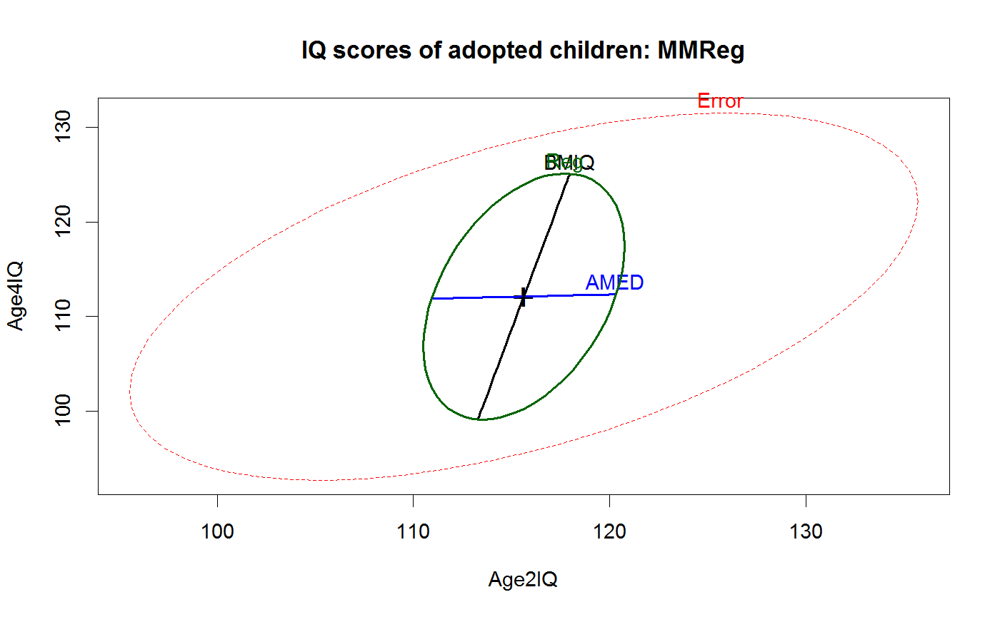
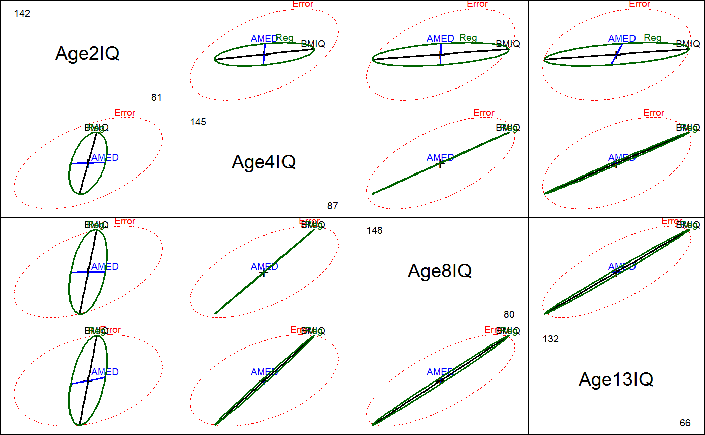
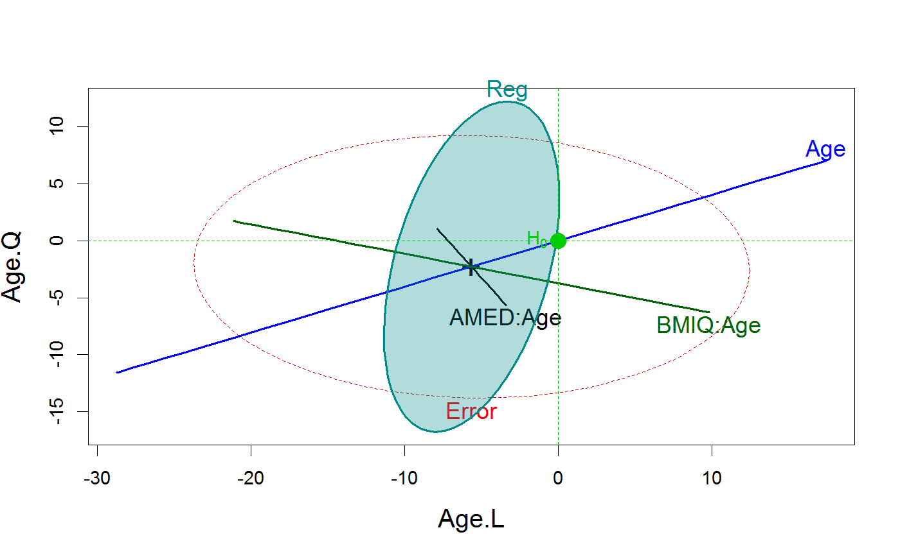

<!-- Generated by pkgdown: do not edit by hand -->
<!DOCTYPE html>
<html>
  <head>
  <meta charset="utf-8">
<meta http-equiv="X-UA-Compatible" content="IE=edge">
<meta name="viewport" content="width=device-width, initial-scale=1.0">

<title>Adopted Children — Adopted • heplots</title>

<!-- jquery -->
<script src="https://code.jquery.com/jquery-3.1.0.min.js" integrity="sha384-nrOSfDHtoPMzJHjVTdCopGqIqeYETSXhZDFyniQ8ZHcVy08QesyHcnOUpMpqnmWq" crossorigin="anonymous"></script>
<!-- Bootstrap -->
<link href="https://maxcdn.bootstrapcdn.com/bootswatch/3.3.7/cerulean/bootstrap.min.css" rel="stylesheet" crossorigin="anonymous">

<script src="https://maxcdn.bootstrapcdn.com/bootstrap/3.3.7/js/bootstrap.min.js" integrity="sha384-Tc5IQib027qvyjSMfHjOMaLkfuWVxZxUPnCJA7l2mCWNIpG9mGCD8wGNIcPD7Txa" crossorigin="anonymous"></script>

<!-- Font Awesome icons -->
<link href="https://maxcdn.bootstrapcdn.com/font-awesome/4.6.3/css/font-awesome.min.css" rel="stylesheet" integrity="sha384-T8Gy5hrqNKT+hzMclPo118YTQO6cYprQmhrYwIiQ/3axmI1hQomh7Ud2hPOy8SP1" crossorigin="anonymous">


<!-- pkgdown -->
<link href="../pkgdown.css" rel="stylesheet">
<script src="../jquery.sticky-kit.min.js"></script>
<script src="../pkgdown.js"></script>
  
  
<!-- mathjax -->
<script src='https://mathjax.rstudio.com/latest/MathJax.js?config=TeX-AMS-MML_HTMLorMML'></script>

<!--[if lt IE 9]>
<script src="https://oss.maxcdn.com/html5shiv/3.7.3/html5shiv.min.js"></script>
<script src="https://oss.maxcdn.com/respond/1.4.2/respond.min.js"></script>
<![endif]-->


  </head>

  <body>
    <div class="container template-reference-topic">
      <header>
      <div class="navbar navbar-default navbar-fixed-top" role="navigation">
  <div class="container">
    <div class="navbar-header">
      <button type="button" class="navbar-toggle collapsed" data-toggle="collapse" data-target="#navbar">
        <span class="icon-bar"></span>
        <span class="icon-bar"></span>
        <span class="icon-bar"></span>
      </button>
      <a class="navbar-brand" href="../index.html">heplots</a>
    </div>
    <div id="navbar" class="navbar-collapse collapse">
      <ul class="nav navbar-nav">
        <li>
  <a href="../index.html">
    <span class="fa fa-home fa-lg"></span>
     
  </a>
</li>
<li>
  <a href="../reference/index.html">Reference</a>
</li>
      </ul>
      
      <ul class="nav navbar-nav navbar-right">
        
      </ul>
    </div><!--/.nav-collapse -->
  </div><!--/.container -->
</div><!--/.navbar -->

      
      </header>

      <div class="row">
  <div class="col-md-9 contents">
    <div class="page-header">
    <h1>Adopted Children</h1>
    </div>

    
    <p>Data are a subset from an observational, longitudinal, study on
  adopted children.  Is child's intelligence related to intelligence of
  the biological mother and the intelligence of the adoptive mother?</p>
<p>The child's intelligence was measured at age 2, 4, 8, and 13 for
  this sample.  How does intelligence change over time, and how are
  these changes related to intelligence of the birth and adoptive mother?</p>
    

    <pre class="usage"><span class='no'>Adopted</span></pre>
        
    <h2 class="hasAnchor" id="format"><a class="anchor" href="#format"></a>Format</h2>

    <p>A data frame with 62 observations on the following 6 variables.</p><dl class='dl-horizontal'>
    <dt><code>AMED</code></dt><dd><p>adoptive mother's years of education (proxy for her IQ)</p></dd>
    <dt><code>BMIQ</code></dt><dd><p>biological mother's score on IQ test</p></dd>
    <dt><code>Age2IQ</code></dt><dd><p>IQ of child at age 2</p></dd>
    <dt><code>Age4IQ</code></dt><dd><p>IQ of child at age 4</p></dd>
    <dt><code>Age8IQ</code></dt><dd><p>IQ of child at age 8</p></dd>
    <dt><code>Age13IQ</code></dt><dd><p>IQ of child at age 13</p></dd>
  </dl>
    
    <h2 class="hasAnchor" id="source"><a class="anchor" href="#source"></a>Source</h2>

    <p>Ramsey, F.L. and Schafer, D.W. (2002). <em>The Statistical Sleuth: A
    Course in Methods of Data Analysis (2nd ed)</em>, Duxbury.</p>
<p>This data set is identical to  <code><a href='http://www.rdocumentation.org/packages/Sleuth2/topics/ex1605'>ex1605</a></code> in the <code>Sleuth2</code>
  package.</p>
    
    <h2 class="hasAnchor" id="references"><a class="anchor" href="#references"></a>References</h2>

    <p>Friendly, Michael  (2010). HE Plots for Repeated Measures Designs. <em>Journal of Statistical Software</em>,
  37(4), 1-40. URL <a href='http://www.jstatsoft.org/v37/i04/'>http://www.jstatsoft.org/v37/i04/</a>.</p>
<p>Skodak, M. and Skeels, H.M. (1949). A Final Follow-up Study of One
  Hundred Adopted Children, <em>Journal of Genetic Psychology</em>
  <b>75</b>: 85--125.</p>
    
    <h2 class="hasAnchor" id="see-also"><a class="anchor" href="#see-also"></a>See also</h2>

    <p><code><a href='http://www.rdocumentation.org/packages/Sleuth2/topics/ex1605'>ex1605</a></code></p>
    

    <h2 class="hasAnchor" id="examples"><a class="anchor" href="#examples"></a>Examples</h2>
    <pre class="examples"><div class='input'><span class='co'># Treat as multivariate regression problem</span>
<span class='no'>Adopted.mod</span> <span class='kw'>&lt;-</span> <span class='fu'>lm</span>(<span class='fu'>cbind</span>(<span class='no'>Age2IQ</span>, <span class='no'>Age4IQ</span>, <span class='no'>Age8IQ</span>, <span class='no'>Age13IQ</span>) ~ <span class='no'>AMED</span> + <span class='no'>BMIQ</span>, <span class='kw'>data</span><span class='kw'>=</span><span class='no'>Adopted</span>)
<span class='no'>Adopted.mod</span></div><div class='output co'>#&gt; 
#&gt; Call:
#&gt; lm(formula = cbind(Age2IQ, Age4IQ, Age8IQ, Age13IQ) ~ AMED + 
#&gt;     BMIQ, data = Adopted)
#&gt; 
#&gt; Coefficients:
#&gt;              Age2IQ     Age4IQ     Age8IQ     Age13IQ  
#&gt; (Intercept)  117.63046   93.33771   88.03739   76.84827
#&gt; AMED          -0.44136   -0.02073   -0.01216   -0.16063
#&gt; BMIQ           0.04001    0.22172    0.30961    0.36747
#&gt; </div><div class='input'>
<span class='fu'>require</span>(<span class='no'>car</span>)
<span class='co'># test overall multivariate regression</span>
<span class='fu'><a href='http://www.rdocumentation.org/packages/car/topics/linearHypothesis'>linearHypothesis</a></span>(<span class='no'>Adopted.mod</span>, <span class='fu'>c</span>(<span class='st'>"AMED"</span>,<span class='st'>"BMIQ"</span>))</div><div class='output co'>#&gt; 
#&gt; Sum of squares and products for the hypothesis:
#&gt;           Age2IQ    Age4IQ    Age8IQ   Age13IQ
#&gt; Age2IQ  118.3111  123.1252  168.2407  231.7826
#&gt; Age4IQ  123.1252  763.3184 1066.4332 1260.8390
#&gt; Age8IQ  168.2407 1066.4332 1490.0603 1760.4299
#&gt; Age13IQ 231.7826 1260.8390 1760.4299 2090.8328
#&gt; 
#&gt; Sum of squares and products for error:
#&gt;            Age2IQ   Age4IQ   Age8IQ   Age13IQ
#&gt; Age2IQ  10242.157 5137.843 5000.888  3430.234
#&gt; Age4IQ   5137.843 9561.649 5929.696  5316.677
#&gt; Age8IQ   5000.888 5929.696 9875.424  8141.506
#&gt; Age13IQ  3430.234 5316.677 8141.506 12312.409
#&gt; 
#&gt; Multivariate Tests: 
#&gt;                  Df test stat approx F num Df den Df   Pr(&gt;F)  
#&gt; Pillai            2 0.1964576 1.552235      8    114 0.147134  
#&gt; Wilks             2 0.8065020 1.589253      8    112 0.135846  
#&gt; Hotelling-Lawley  2 0.2362528 1.624238      8    110 0.125939  
#&gt; Roy               2 0.2195371 3.128404      4     57 0.021426 *
#&gt; ---
#&gt; Signif. codes:  0 <U+0091>***<U+0092> 0.001 <U+0091>**<U+0092> 0.01 <U+0091>*<U+0092> 0.05 <U+0091>.<U+0092> 0.1 <U+0091> <U+0092> 1</div><div class='input'>
<span class='co'># show separate linear regressions</span>
<span class='no'>op</span> <span class='kw'>&lt;-</span> <span class='fu'>par</span>(<span class='kw'>mfcol</span><span class='kw'>=</span><span class='fu'>c</span>(<span class='fl'>2</span>,<span class='fl'>4</span>), <span class='kw'>mar</span><span class='kw'>=</span><span class='fu'>c</span>(<span class='fl'>4</span>,<span class='fl'>4</span>,<span class='fl'>2</span>,<span class='fl'>2</span>)+<span class='fl'>.1</span>)
<span class='kw'>for</span> (<span class='no'>i</span> <span class='kw'>in</span> <span class='fl'>3</span>:<span class='fl'>6</span>) {
        <span class='fu'><a href='http://www.rdocumentation.org/packages/car/topics/Ellipses'>dataEllipse</a></span>(<span class='fu'>as.matrix</span>(<span class='no'>Adopted</span>[,<span class='fu'>c</span>(<span class='fl'>1</span>,<span class='no'>i</span>)]),<span class='kw'>col</span><span class='kw'>=</span><span class='st'>"black"</span>, <span class='kw'>levels</span><span class='kw'>=</span><span class='fl'>0.68</span>, <span class='kw'>ylim</span><span class='kw'>=</span><span class='fu'>c</span>(<span class='fl'>70</span>,<span class='fl'>140</span>))
        <span class='fu'>abline</span>(<span class='fu'>lm</span>(<span class='no'>Adopted</span>[,<span class='no'>i</span>] ~ <span class='no'>Adopted</span>[,<span class='fl'>1</span>]), <span class='kw'>col</span><span class='kw'>=</span><span class='st'>"red"</span>, <span class='kw'>lwd</span><span class='kw'>=</span><span class='fl'>2</span>)
        <span class='fu'><a href='http://www.rdocumentation.org/packages/car/topics/Ellipses'>dataEllipse</a></span>(<span class='fu'>as.matrix</span>(<span class='no'>Adopted</span>[,<span class='fu'>c</span>(<span class='fl'>2</span>,<span class='no'>i</span>)]),<span class='kw'>col</span><span class='kw'>=</span><span class='st'>"black"</span>, <span class='kw'>levels</span><span class='kw'>=</span><span class='fl'>0.68</span>, <span class='kw'>ylim</span><span class='kw'>=</span><span class='fu'>c</span>(<span class='fl'>70</span>,<span class='fl'>140</span>))
        <span class='fu'>abline</span>(<span class='fu'>lm</span>(<span class='no'>Adopted</span>[,<span class='no'>i</span>] ~ <span class='no'>Adopted</span>[,<span class='fl'>2</span>]), <span class='kw'>col</span><span class='kw'>=</span><span class='st'>"red"</span>, <span class='kw'>lwd</span><span class='kw'>=</span><span class='fl'>2</span>)
        <span class='fu'>abline</span>(<span class='kw'>a</span><span class='kw'>=</span><span class='fl'>0</span>,<span class='kw'>b</span><span class='kw'>=</span><span class='fl'>1</span>, <span class='kw'>lty</span><span class='kw'>=</span><span class='fl'>1</span>, <span class='kw'>col</span><span class='kw'>=</span><span class='st'>"blue"</span>)
}</div><div class='img'></div><div class='input'><span class='fu'>par</span>(<span class='no'>op</span>)

<span class='co'># between-S (MMReg) plots</span>
<span class='fu'><a href='heplot.html'>heplot</a></span>(<span class='no'>Adopted.mod</span>, <span class='kw'>hypotheses</span><span class='kw'>=</span><span class='fu'>list</span>(<span class='st'>"Reg"</span><span class='kw'>=</span><span class='fu'>c</span>(<span class='st'>"AMED"</span>, <span class='st'>"BMIQ"</span>)),
        <span class='kw'>main</span><span class='kw'>=</span><span class='st'>"IQ scores of adopted children: MMReg"</span>)</div><div class='img'></div><div class='input'>
<span class='fu'>pairs</span>(<span class='no'>Adopted.mod</span>, <span class='kw'>hypotheses</span><span class='kw'>=</span><span class='fu'>list</span>(<span class='st'>"Reg"</span><span class='kw'>=</span><span class='fu'>c</span>(<span class='st'>"AMED"</span>, <span class='st'>"BMIQ"</span>)))</div><div class='img'></div><div class='input'>
<span class='fu'><a href='heplot3d.html'>heplot3d</a></span>(<span class='no'>Adopted.mod</span>, <span class='kw'>hypotheses</span><span class='kw'>=</span><span class='fu'>list</span>(<span class='st'>"Reg"</span><span class='kw'>=</span><span class='fu'>c</span>(<span class='st'>"AMED"</span>, <span class='st'>"BMIQ"</span>)),
        <span class='kw'>col</span> <span class='kw'>=</span> <span class='fu'>c</span>(<span class='st'>"red"</span>, <span class='st'>"blue"</span>, <span class='st'>"black"</span>, <span class='st'>"gray"</span>), <span class='kw'>wire</span><span class='kw'>=</span><span class='fl'>FALSE</span>)

<span class='co'># Treat IQ at different ages as a repeated measure factor</span>
<span class='co'># within-S models &amp; plots</span>
<span class='no'>Age</span> <span class='kw'>&lt;-</span> <span class='fu'>data.frame</span>(<span class='kw'>Age</span><span class='kw'>=</span><span class='fu'>ordered</span>(<span class='fu'>c</span>(<span class='fl'>2</span>,<span class='fl'>4</span>,<span class='fl'>8</span>,<span class='fl'>13</span>)))
<span class='fu'><a href='http://www.rdocumentation.org/packages/car/topics/Anova'>Anova</a></span>(<span class='no'>Adopted.mod</span>, <span class='kw'>idata</span><span class='kw'>=</span><span class='no'>Age</span>, <span class='kw'>idesign</span><span class='kw'>=</span>~<span class='no'>Age</span>, <span class='kw'>test</span><span class='kw'>=</span><span class='st'>"Roy"</span>)</div><div class='output co'>#&gt; 
#&gt; Type II Repeated Measures MANOVA Tests: Roy test statistic
#&gt;             Df test stat approx F num Df den Df    Pr(&gt;F)    
#&gt; (Intercept)  1   115.669   6824.5      1     59 &lt; 2.2e-16 ***
#&gt; AMED         1     0.002      0.1      1     59  0.737878    
#&gt; BMIQ         1     0.126      7.5      1     59  0.008302 ** 
#&gt; Age          1     0.712     13.5      3     57 8.911e-07 ***
#&gt; AMED:Age     1     0.014      0.3      3     57  0.845454    
#&gt; BMIQ:Age     1     0.122      2.3      3     57  0.085792 .  
#&gt; ---
#&gt; Signif. codes:  0 <U+0091>***<U+0092> 0.001 <U+0091>**<U+0092> 0.01 <U+0091>*<U+0092> 0.05 <U+0091>.<U+0092> 0.1 <U+0091> <U+0092> 1</div><div class='input'>
<span class='co'># within-S plots</span>
<span class='fu'><a href='heplot.html'>heplot</a></span>(<span class='no'>Adopted.mod</span>, <span class='kw'>idata</span><span class='kw'>=</span><span class='no'>Age</span>, <span class='kw'>idesign</span><span class='kw'>=</span>~<span class='no'>Age</span>, <span class='kw'>iterm</span><span class='kw'>=</span><span class='st'>"Age"</span>,
        <span class='kw'>cex</span><span class='kw'>=</span><span class='fl'>1.25</span>, <span class='kw'>cex.lab</span><span class='kw'>=</span><span class='fl'>1.4</span>, <span class='kw'>fill</span><span class='kw'>=</span><span class='fu'>c</span>(<span class='fl'>FALSE</span>, <span class='fl'>TRUE</span>),
        <span class='kw'>hypotheses</span><span class='kw'>=</span><span class='fu'>list</span>(<span class='st'>"Reg"</span><span class='kw'>=</span><span class='fu'>c</span>(<span class='st'>"AMED"</span>, <span class='st'>"BMIQ"</span>))
        )</div><div class='img'></div><div class='input'>
</div></pre>
  </div>
  <div class="col-md-3 hidden-xs hidden-sm" id="sidebar">
    <h2>Contents</h2>
    <ul class="nav nav-pills nav-stacked">
      
      <li><a href="#format">Format</a></li>

      <li><a href="#source">Source</a></li>

      <li><a href="#references">References</a></li>

      <li><a href="#see-also">See also</a></li>
      
      <li><a href="#examples">Examples</a></li>
    </ul>

  </div>
</div>

      <footer>
      <div class="copyright">
  <p>Developed by John Fox, Michael Friendly.</p>
</div>

<div class="pkgdown">
  <p>Site built with <a href="http://hadley.github.io/pkgdown/">pkgdown</a>.</p>
</div>

      </footer>
   </div>

  </body>
</html>
